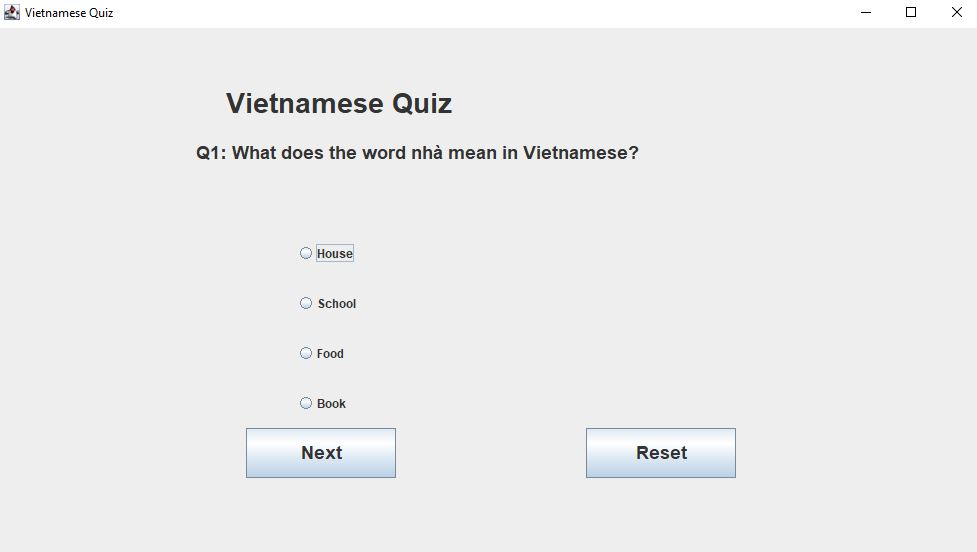
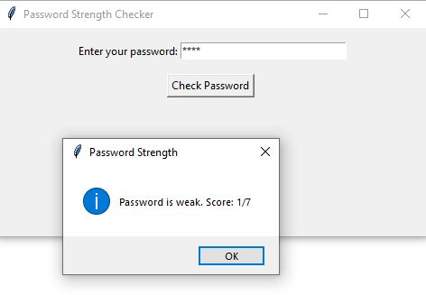
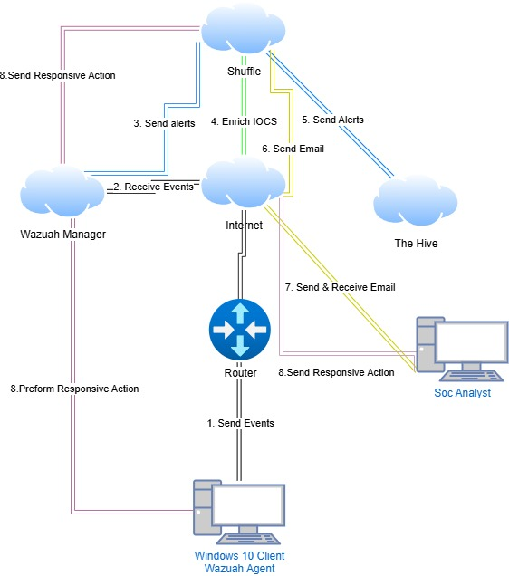

Currently working on the AI Laptop Recommendation System. Orchestrated the implementation of content filtering, significantly increasing efficiency. Additionally, trained an AI model to compare laptop prices, improving accuracy. Integrated testing feedback into the AI model, reducing bug-related delays to further enhance the system's performance.

Developed an interactive quiz application in Java to enhance proficiency in Vietnamese vocabulary. The application features a robust scoring system that tracks user progress and provides personalized feedback. It incorporates a dynamic question database with multiple difficulty levels and categories, offering a tailored learning experience to support language development effectively.

Designed and implemented a Python-based Password Strength Checker to evaluate the security of user passwords effectively. Leveraging logical operations, the tool identifies weak passwords, such as those containing predictable sequences or commonly used terms. By employing a robust scoring system, it classifies passwords into "Weak," "Moderate," and "Strong" categories, providing users with clear feedback to enhance their password security and safeguard sensitive information.

Built and maintained a home lab to gain practical experience in cybersecurity monitoring and incident response. Through designing and executing scenarios like detecting and mitigating phishing attacks, I honed my ability to identify threats and respond effectively. Additionally, I documented findings and remediation steps to simulate professional Security Operations Center (SOC) workflows, further developing my skills in threat analysis and response strategies.